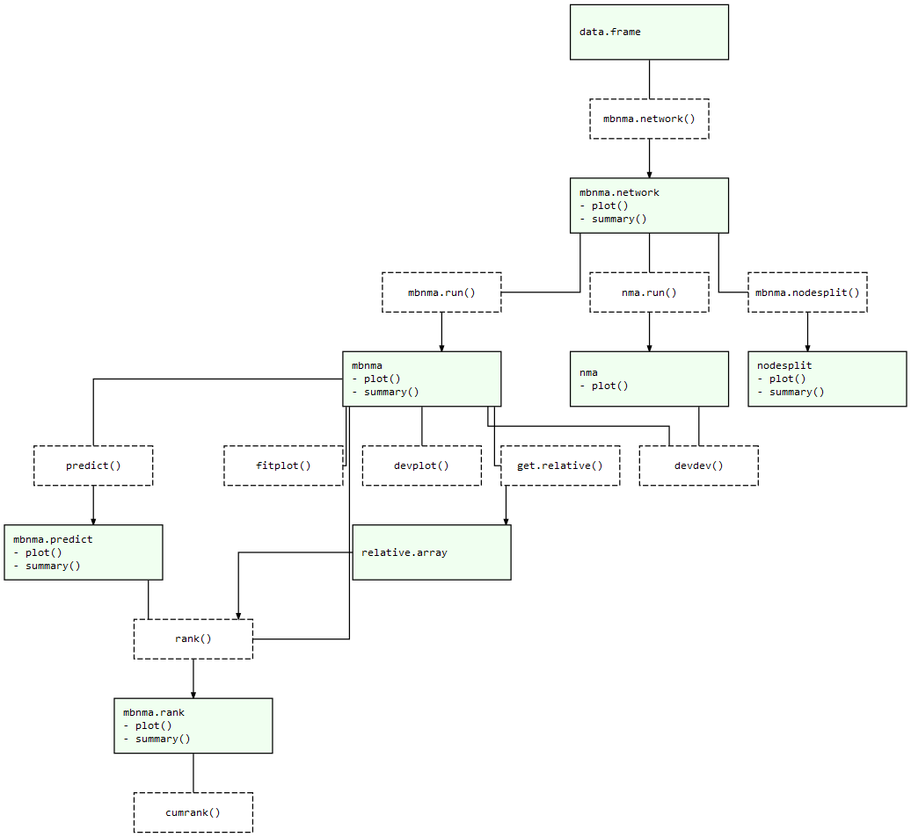

The goal of MBNMAdose is to provide a collection of useful commands that allow users to run dose-response Model-Based Network Meta-Analyses (MBNMA). This allows evidence synthesis of studies that compare multiple doses of different agents in a way that can account for the dose-response relationship.
Whilst making use of all the available evidence in a statistically robust and biologically plausible framework, this also can help connect networks at the agent level that may otherwise be disconnected at the dose/treatment level, and help improve precision of estimates(Pedder et al. 2021). It avoids “lumping” of doses that is often done in standard Network Meta-Analysis (NMA). All models and analyses are implemented in a Bayesian framework, following an extension of the standard NMA methodology presented by (Lu and Ades 2004) and are run in JAGS (Just Another Gibbs Sampler). For full details of dose-response MBNMA methodology see Mawdsley et al. (2016). Throughout this package we refer to a treatment as a specific dose or a specific agent.
A short introductory YouTube video from the ESMAR Conference 2021 can be found here
Installation
On CRAN you can easily install the current release version of MBNMAdose from CRAN with:
install.packages("MBNMAdose")For the development version the package can be installed directly from GitHub using the devtools R package:
# First install devtools
install.packages("devtools")
# Then install MBNMAdose directly from GitHub
devtools::install_github("hugaped/MBNMAdose")Workflow
Functions within MBNMAdose follow a clear pattern of use:
- Load your data into the correct format using
mbnma.network()and explore potential relationships - Perform a dose-response MBNMA using
mbnma.run(). Modelling of effect modifying covariates is also possibly using Network Meta-Regression. - Test for consistency at the treatment-level using functions like
nma.nodesplit()andnma.run() - Examine model outputs, such as relative effects, forest plots and treatment rankings
- Use your model to predict responses using
predict()
At each of these stages there are a number of informative plots that can be generated to help understand the data and to make decisions regarding model fitting. Exported functions in the package are connected like so:
MBNMAdose package structure: Light green nodes represent classes and the generic functions that can be applied to them. Dashed boxes indicate functions that can be applied to objects of specific classes 